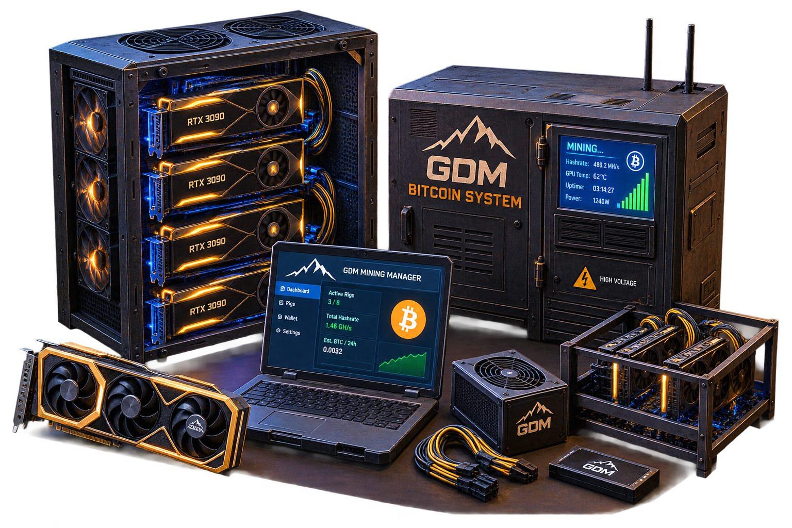

MODDED SYSTEM
GDM Bitcoin System
The GDM Bitcoin System introduces a complete Bitcoin mining system to the server.
Players must explore the map and collect GDM RAM Sticks, Motherboards, Gold GPUs, and CPUs to assemble their mining equipment.
The system requires 1 Gold GPU for every 1 Bitcoin produced, making GPUs a valuable and consumable part of the mining process.
The system adds new high-value items to the economy and gives players another reason to explore the full extent of the map while searching for the components needed to keep their mining operation running.